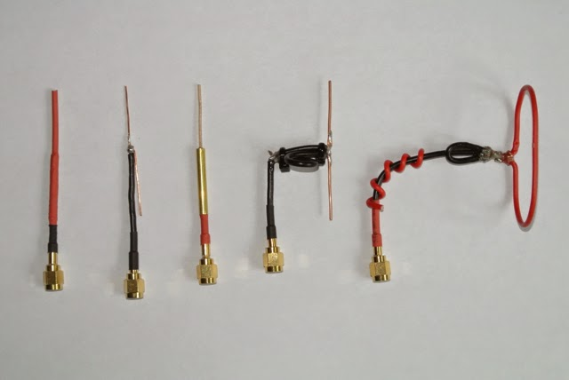
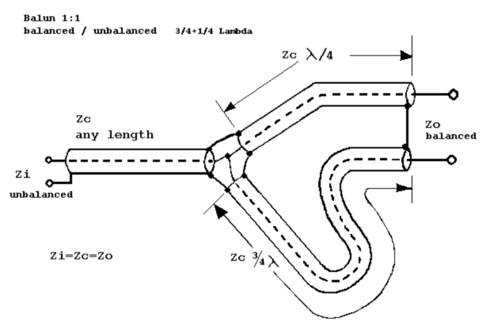

Radio Controlled Aircraft
The photo shows, from the left, a quarter-wavelength monopole, two half-wavelength dipoles, a half-wavelength dipole with a balum and a folded half-wavelength dipole. I tried all of these in an attempt to reduce bad packets and to increase the signal strength.
I struggle to understand how an antenna works, but commercial transmitters and receivers seem to be supplied with a quarter-wavelength monopole, which apparently uses the ground as the other side of a half-wavelength dipole. The length of the bare conductor is determined by the base frequency being used. So for a 2.4 GHz system, the wavelength is 2.99792458E8 m/s divided by 2.4E9 Hz, which equals 124.9 mm. Which gives a half-wavelength of 62.49 mm and a quarter-wavelength of 31.2 mm.
The quarter-wavelength monopole is effectively a half-wavelength dipole, using the ground as the other half, but the dipoles have one conductor connected to the centre of the coaxial cable and the other conductor connected to the shield. It seems that these dipole antennae are 'unbalanced'. To balance them you need to add a balum as shown in the figure. I also tried a folded half-wavelength dipole